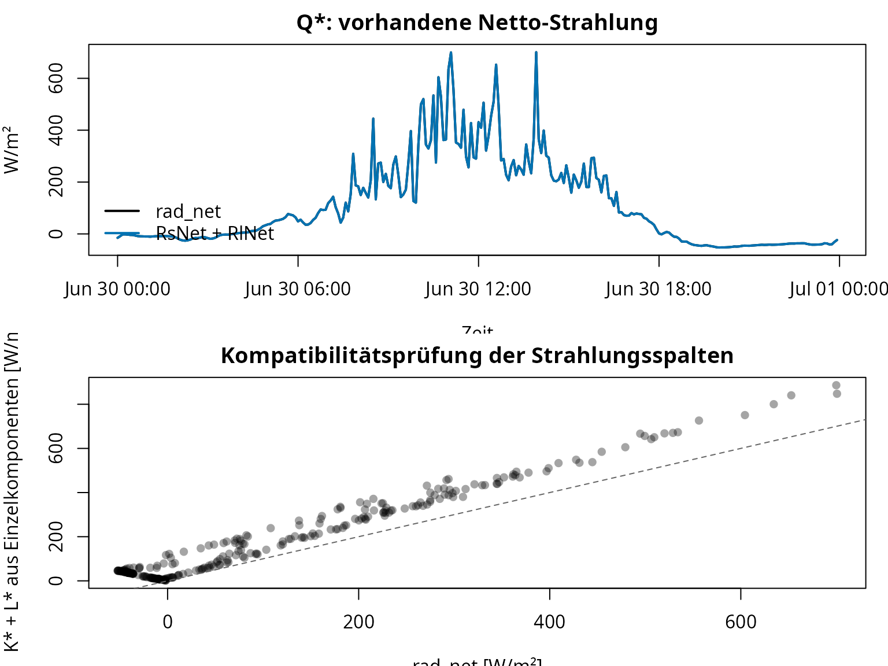
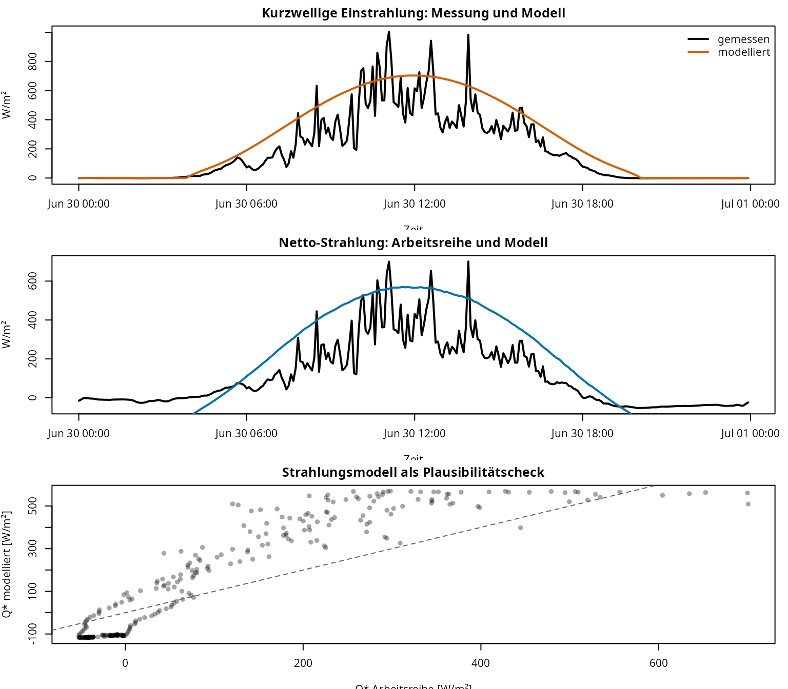
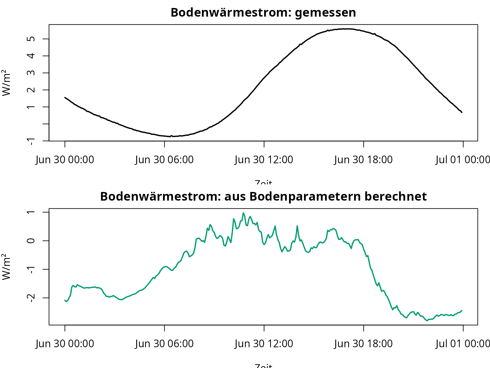
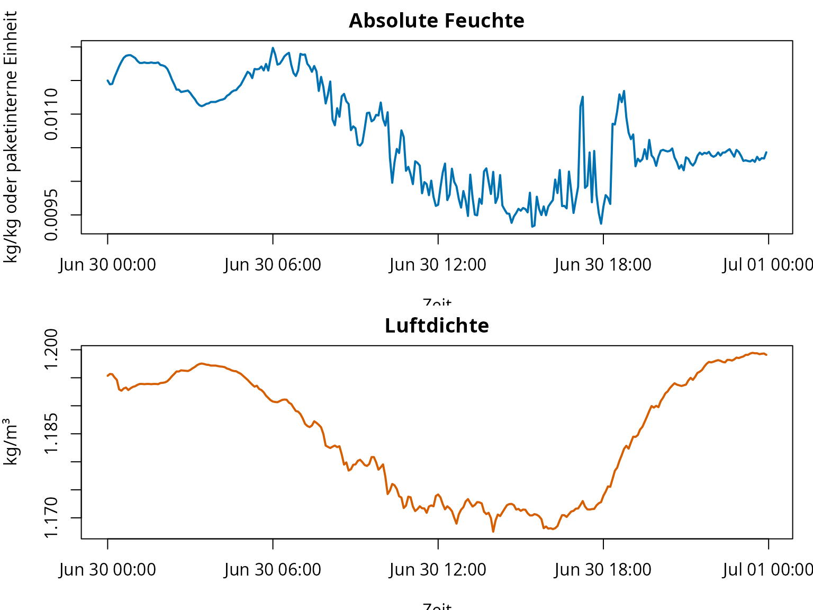
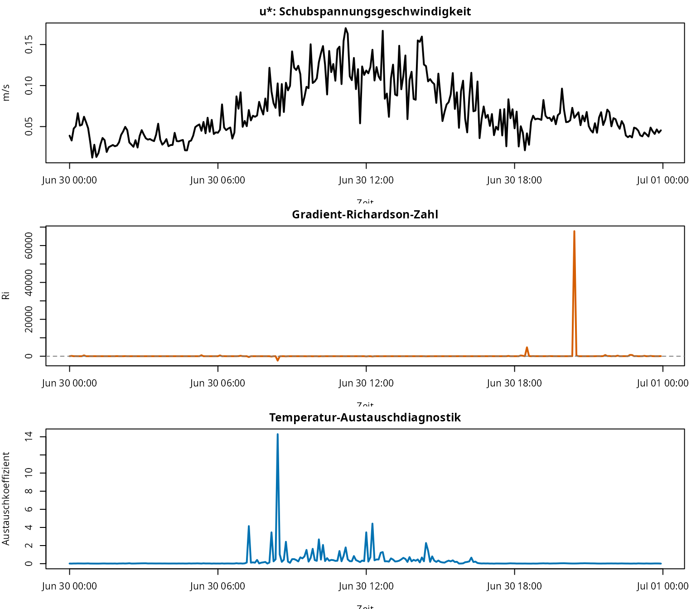
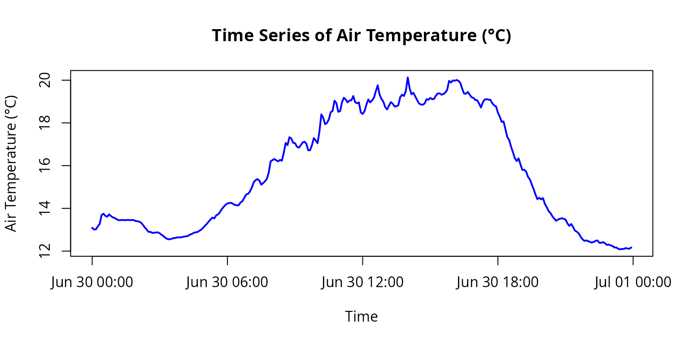

fieldClim: weitere Use-Case-Workflows
Chris Reudenbach
2026-05-28
02-fieldclim-additional-usecases-fixed2.rmdZiel dieser Vignette
Diese Vignette ergänzt die Energiebilanz-Vignette. Dort steht der vollständige Caldern-Workflow mit , , und im Zentrum. Diese Seite ordnet die weiteren Paketmöglichkeiten als eigenständige Use Cases.
Im vorhandenen Material liegen die Beispiele nicht in einem separaten
examples/-Ordner. Sie stecken vor allem in den bestehenden
Vignetten, Hilfeseiten, Tests und Update-Notizen. Daraus ergeben sich
mehrere Arbeitswege:
| Use Case | Frage | Paketbereich |
|---|---|---|
| 0 | Wie arbeitet das Paket grundsätzlich? |
weather_station, Default-Methoden, S3-Methoden |
| 1 | Wie werden Strahlungsreihen geprüft und reparaturfähig gemacht? |
rad_*, Messspalten, Zeitreihenprüfung |
| 2 | Wie kann Strahlung modelliert werden, wenn Messwerte fehlen oder geprüft werden sollen? |
sol_*, trans_*, terr_*,
rad_*
|
| 3 | Wie werden Bodenparameter und Bodenwärmestrom geprüft? | soil_* |
| 4 | Welche Hilfsgrößen werden für Feuchte, Druck und Temperatur gebraucht? |
hum_*, pres_*, temp_*
|
| 5 | Wie werden Turbulenz- und Stabilitätsgrößen diagnostisch genutzt? |
turb_*, bound_*
|
| 6 | Wie wird ein weather_station-Objekt kontrolliert,
geplottet und exportiert? |
build_weather_station(),
plot_weather_station(), as.data.frame()
|
Diese Vignette ist bewusst eine Paketlandkarte. Sie ersetzt keine vollständige physikalische Ableitung. Sie zeigt, welche Paketfunktionen zu welchen Arbeitsproblemen passen.
Gemeinsamer Daten- und Objektaufbau
Alle Use Cases verwenden denselben kleinen Lehrdatensatz. Der
Datensatz liegt im installierten Paket unter
inst/extdata/.
# fieldClim laden.
library(fieldClim)
# Pfad zur mitgelieferten Lehrdatei.
caldern_file <- system.file(
"extdata",
"caldern_wiese_2017-06-30.csv",
package = "fieldClim"
)
# CSV-Datei einlesen.
# "NULL", "NA" und leere Einträge werden als fehlende Werte behandelt.
caldern <- read.csv(
caldern_file,
na.strings = c("NULL", "NA", "")
)
# Zeitstempel explizit als lokale Stationszeit interpretieren.
caldern$datetime <- as.POSIXct(
caldern$datetime,
format = "%Y-%m-%d %H:%M:%S",
tz = "Europe/Berlin"
)
# Einige Solar- und Strahlungsfunktionen im Paket greifen intern auf
# POSIXlt-Felder wie hour, min und sec zu. Deshalb wird für diese
# Funktionsfamilie zusätzlich eine POSIXlt-Zeitspalte erzeugt.
# Die normale datetime-Spalte bleibt für Zeitreihenplots erhalten.
caldern$datetime_solar <- as.POSIXlt(
caldern$datetime,
tz = "Europe/Berlin"
)
# Grundkontrollen.
nrow(caldern)
#> [1] 288
range(caldern$datetime)
#> [1] "2017-06-30 00:00:00 CEST" "2017-06-30 23:55:00 CEST"
summary(diff(caldern$datetime))
#> Time differences in mins
#> Min. 1st Qu. Median Mean 3rd Qu. Max.
#> 5 5 5 5 5 5
names(caldern)
#> [1] "record" "datetime" "Ta_2m" "Huma_2m"
#> [5] "Ta_10m" "Huma_10m" "Windspeed_2m" "Windspeed_10m"
#> [9] "rad_sw_in" "rad_sw_out" "RsNet" "RlNet"
#> [13] "rad_net" "LUpCo" "LDnCo" "water_vol_soil"
#> [17] "Ts" "heatflux_soil" "PCP" "datetime_solar"
# Ein weather_station-Objekt bündelt Messgrößen, Standort und Modellannahmen.
# Dieses Objekt kann an viele Paketfunktionen übergeben werden.
ws <- build_weather_station(
datetime = caldern$datetime,
lon = 8.6832,
lat = 50.8405,
elev = 261,
temp = caldern$Ta_2m,
rh = caldern$Huma_2m,
t1 = caldern$Ta_2m,
t2 = caldern$Ta_10m,
hum1 = caldern$Huma_2m,
hum2 = caldern$Huma_10m,
v1 = caldern$Windspeed_2m,
v2 = caldern$Windspeed_10m,
z1 = 2,
z2 = 10,
slope = 0,
exposition = 0,
valley = FALSE,
surface_type = "field",
surface_temp = caldern$Ts,
texture = "peat",
moisture = caldern$water_vol_soil,
rad_bal = caldern$rad_net,
soil_flux = caldern$heatflux_soil,
soil_temp1 = caldern$Ts,
soil_temp2 = caldern$Ta_2m,
soil_depth1 = 0.25,
soil_depth2 = 0,
obs_height = 2
)
class(ws)
#> [1] "weather_station"
names(ws)
#> [1] "datetime" "lon" "lat" "elev" "temp"
#> [6] "rh" "t1" "t2" "hum1" "hum2"
#> [11] "v1" "v2" "z1" "z2" "slope"
#> [16] "exposition" "valley" "surface_type" "surface_temp" "texture"
#> [21] "moisture" "rad_bal" "soil_flux" "soil_temp1" "soil_temp2"
#> [26] "soil_depth1" "soil_depth2" "obs_height"Interpretation. Das
weather_station-Objekt ist der zentrale Arbeitscontainer
des Pakets. Viele Funktionen haben zwei Nutzungsformen: eine
Default-Methode mit einzelnen Argumenten und eine Methode für
weather_station. Der Objektweg ist sinnvoll, sobald mehrere
Funktionen dieselben Messgrößen, Standortdaten und Oberflächenannahmen
brauchen.
Use Case 0: Default-Methode oder weather_station-Methode?
Fast jede zentrale Funktion kann direkt mit Einzelargumenten oder mit
einem weather_station-Objekt genutzt werden.
# Default-Methode: alle benötigten Argumente werden einzeln angegeben.
pres_p(elev = 261, temp = 20)
#> [1] 982.884
# Objektmethode: die Funktion liest benötigte Größen aus dem weather_station-Objekt.
pres_p(ws)
#> [1] 982.1623 982.1537 982.1548 982.1697 982.1815 982.2263 982.2327 982.2220
#> [9] 982.2178 982.2295 982.2210 982.2146 982.2114 982.2050 982.2007 982.2007
#> [17] 982.2018 982.2007 982.2007 982.2018 982.2007 982.2007 982.2018 982.1964
#> [25] 982.1954 982.1932 982.1879 982.1772 982.1644 982.1537 982.1419 982.1419
#> [33] 982.1366 982.1376 982.1387 982.1398 982.1344 982.1269 982.1205 982.1119
#> [41] 982.1066 982.1044 982.1066 982.1098 982.1109 982.1141 982.1141 982.1141
#> [49] 982.1162 982.1184 982.1194 982.1216 982.1280 982.1312 982.1366 982.1398
#> [57] 982.1409 982.1473 982.1526 982.1623 982.1719 982.1815 982.1932 982.2039
#> [65] 982.2135 982.2092 982.2242 982.2295 982.2401 982.2561 982.2667 982.2773
#> [73] 982.2837 982.2858 982.2869 982.2816 982.2762 982.2741 982.2752 982.2890
#> [81] 982.2953 982.3123 982.3282 982.3313 982.3430 982.3630 982.3884 982.3989
#> [89] 982.4042 982.3968 982.3768 982.3841 982.3936 982.4052 982.4367 982.4913
#> [97] 982.4976 982.5028 982.4965 982.4913 982.4986 982.4944 982.5331 982.5810
#> [105] 982.5706 982.6091 982.6029 982.5821 982.5800 982.5633 982.5581 982.5696
#> [113] 982.5831 982.5873 982.5779 982.5456 982.5456 982.5706 982.6049 982.5935
#> [121] 982.5800 982.6382 982.7198 982.7033 982.6723 982.6785 982.6961 982.7302
#> [129] 982.7363 982.7857 982.7744 982.7322 982.7353 982.7785 982.8001 982.7908
#> [137] 982.7775 982.7867 982.7878 982.8083 982.7785 982.7734 982.7775 982.7291
#> [145] 982.7219 982.7353 982.7672 982.7919 982.7775 982.7867 982.8001 982.8308
#> [153] 982.8594 982.8154 982.7939 982.7816 982.7549 982.7435 982.7621 982.7785
#> [161] 982.7713 982.7580 982.7590 982.7641 982.8031 982.8144 982.8083 982.8329
#> [169] 982.8972 982.8451 982.8165 982.8236 982.8062 982.7888 982.7723 982.7672
#> [177] 982.7662 982.7723 982.7929 982.7898 982.7990 982.7929 982.7939 982.8103
#> [185] 982.8206 982.8206 982.8144 982.8175 982.8247 982.8380 982.8809 982.8727
#> [193] 982.8829 982.8809 982.8850 982.8809 982.8707 982.8431 982.8195 982.8195
#> [201] 982.8277 982.8144 982.8021 982.7990 982.7888 982.7878 982.7713 982.7528
#> [209] 982.7785 982.7919 982.7929 982.7908 982.7898 982.7734 982.7631 982.7580
#> [217] 982.7281 982.7085 982.6837 982.6858 982.6485 982.6101 982.5956 982.5633
#> [225] 982.5362 982.5070 982.4923 982.5059 982.4766 982.4493 982.4504 982.4420
#> [233] 982.4157 982.4031 982.3789 982.3546 982.3282 982.3049 982.3123 982.3038
#> [241] 982.3102 982.2816 982.2656 982.2454 982.2359 982.2199 982.2082 982.1975
#> [249] 982.2039 982.2071 982.2103 982.2071 982.2039 982.1847 982.1719 982.1815
#> [257] 982.1665 982.1484 982.1430 982.1344 982.1184 982.1055 982.0969 982.0990
#> [265] 982.0958 982.0915 982.0883 982.0915 982.0969 982.0990 982.0872 982.0872
#> [273] 982.0905 982.0851 982.0765 982.0786 982.0743 982.0711 982.0636 982.0636
#> [281] 982.0571 982.0539 982.0560 982.0560 982.0604 982.0582 982.0571 982.0636Interpretation. Die Default-Methode ist gut für
Einzeltests und Formelnachvollzug. Die
weather_station-Methode ist besser für Workflows, weil sie
dieselbe Datenstruktur durch mehrere Berechnungsschritte trägt.
Use Case 1: Strahlungsreihen prüfen und reparaturfähig machen
Strahlungsreihen sind oft der wichtigste Eingang für Energiebilanzrechnungen. Bevor als Netto-Strahlung verwendet wird, müssen die Komponenten geprüft werden.
Die kurzwellige Bilanz lautet:
mit:
- : kurzwellige Bilanz [W/m²]
- : einfallende kurzwellige Strahlung [W/m²]
- : reflektierte kurzwellige Strahlung [W/m²]
Die langwellige Bilanz wird hier in derselben Richtung geschrieben:
mit:
- : langwellige Bilanz [W/m²]
- : langwellige Gegenstrahlung [W/m²]
- : langwellige Ausstrahlung der Oberfläche [W/m²]
Die Netto-Strahlung ergibt sich theoretisch als:
mit:
- : Netto-Strahlung bzw. Strahlungsbilanz [W/m²]
1.1 Komponenten berechnen und mit gespeicherten Nettospalten vergleichen
# Kurzwellige Komponenten aus Messspalten.
caldern$K_down <- caldern$rad_sw_in
caldern$K_up <- caldern$rad_sw_out
caldern$K_star_from_components <- caldern$K_down - caldern$K_up
# Langwellige Komponenten aus Messspalten.
caldern$L_down <- caldern$LDnCo
caldern$L_up <- caldern$LUpCo
caldern$L_star_down_minus_up <- caldern$L_down - caldern$L_up
caldern$L_star_up_minus_down <- caldern$L_up - caldern$L_down
# Kontrolle gegen vorhandene Nettospalten.
shortwave_check <- summary(caldern$K_star_from_components - caldern$RsNet)
longwave_check_down_up <- summary(caldern$L_star_down_minus_up - caldern$RlNet)
longwave_check_up_down <- summary(caldern$L_star_up_minus_down - caldern$RlNet)
shortwave_check
#> Min. 1st Qu. Median Mean 3rd Qu. Max.
#> -0.400000 0.000000 0.000000 0.004208 0.001000 0.500000
longwave_check_down_up
#> Min. 1st Qu. Median Mean 3rd Qu. Max.
#> 3.595 32.337 78.015 74.076 100.468 187.400
longwave_check_up_down
#> Min. 1st Qu. Median Mean 3rd Qu. Max.
#> -0.090000 -0.030000 0.000000 -0.001698 0.030000 0.100000Interpretation. Dieser Schritt prüft, welche
Spaltendefinition konsistent ist. Wenn
rad_sw_in - rad_sw_out gut zu RsNet passt, ist
die kurzwellige Bilanz klar. Bei der langwelligen Bilanz muss die
Vorzeichenrichtung geprüft werden. Je nachdem, ob
LDnCo - LUpCo oder LUpCo - LDnCo besser zu
RlNet passt, liegt eine andere Konvention vor.
1.2 Netto-Strahlung aus Nettospalten und Einzelkomponenten prüfen
# Variante A: Netto-Strahlung aus gespeicherten Netto-Spalten.
caldern$Q_star_from_net_columns <- caldern$RsNet + caldern$RlNet
# Variante B: Netto-Strahlung aus Einzelkomponenten.
caldern$Q_star_from_components <- caldern$K_star_from_components +
caldern$L_star_down_minus_up
# Vorhandene Netto-Strahlung.
caldern$Q_star_measured <- caldern$rad_net
# Differenzen prüfen.
summary(caldern$Q_star_from_net_columns - caldern$Q_star_measured)
#> Min. 1st Qu. Median Mean 3rd Qu. Max.
#> -0.100000 -0.010000 0.000000 -0.002542 0.005000 0.100000
summary(caldern$Q_star_from_components - caldern$Q_star_measured)
#> Min. 1st Qu. Median Mean 3rd Qu. Max.
#> 3.595 32.331 78.013 74.078 100.515 187.700
op <- par(mfrow = c(2, 1), mar = c(3.5, 4, 2, 1))
plot(
caldern$datetime,
caldern$Q_star_measured,
type = "l",
col = "#000000",
lwd = 2,
xlab = "Zeit",
ylab = "W/m²",
main = "Q*: vorhandene Netto-Strahlung"
)
lines(caldern$datetime, caldern$Q_star_from_net_columns, col = "#0072B2", lwd = 2)
legend(
"bottomleft",
legend = c("rad_net", "RsNet + RlNet"),
col = c("#000000", "#0072B2"),
lty = 1,
lwd = 2,
bty = "n"
)
plot(
caldern$Q_star_measured,
caldern$Q_star_from_components,
pch = 16,
col = rgb(0, 0, 0, 0.35),
xlab = "rad_net [W/m²]",
ylab = "K* + L* aus Einzelkomponenten [W/m²]",
main = "Kompatibilitätsprüfung der Strahlungsspalten"
)
abline(0, 1, lty = 2, col = "grey40")
par(op)Interpretation. Dieser Use Case ist ein
Datenvalidierungsworkflow. Die Paketfunktionen können nur dann sinnvoll
arbeiten, wenn klar ist, welche Strahlungsgröße als Arbeitsgröße
verwendet wird. Wenn rad_net, RsNet + RlNet
und K* + L* auseinanderlaufen, wird nicht automatisch eine
neue Netto-Strahlung gebaut. Dann wird zuerst dokumentiert, welche
Spalte welche Bilanzebene repräsentiert.
1.3 Strahlungsreihe für weitere Rechnungen festlegen
# Arbeitsentscheidung:
# Für Energiebilanz-Workflows wird die vorhandene Spalte rad_net verwendet.
# Die anderen Varianten bleiben Diagnosegrößen.
caldern$Q_star <- caldern$Q_star_measured
# Kennzahlen der Differenzen dokumentieren.
radiation_decision <- data.frame(
Vergleich = c(
"RsNet + RlNet gegen rad_net",
"K* + L* gegen rad_net"
),
Mittlere_Abweichung = c(
mean(caldern$Q_star_from_net_columns - caldern$Q_star_measured, na.rm = TRUE),
mean(caldern$Q_star_from_components - caldern$Q_star_measured, na.rm = TRUE)
),
Max_abs_Abweichung = c(
max(abs(caldern$Q_star_from_net_columns - caldern$Q_star_measured), na.rm = TRUE),
max(abs(caldern$Q_star_from_components - caldern$Q_star_measured), na.rm = TRUE)
)
)
radiation_decision[, -1] <- round(radiation_decision[, -1], 1)
radiation_decision
#> Vergleich Mittlere_Abweichung Max_abs_Abweichung
#> 1 RsNet + RlNet gegen rad_net 0.0 0.1
#> 2 K* + L* gegen rad_net 74.1 187.7Interpretation. Das ist der eigentliche „Fix“: nicht Werte still überschreiben, sondern eine Arbeitsreihe festlegen und die Alternativen als Diagnosegrößen behalten. Wenn später Wärmeflüsse berechnet werden, ist transparent, welche Version von verwendet wurde.
1.4 Zeitversatz prüfen
Ein Zeitversatz von einem 5-Minuten-Schritt kann bei Strahlung große Abweichungen erzeugen.
# Mittlere absolute Abweichung ohne Versatz.
diff_0 <- mean(abs(
caldern$Q_star_from_components - caldern$Q_star_measured
), na.rm = TRUE)
# Komponentensumme einen Schritt später gegen rad_net vergleichen.
diff_plus <- mean(abs(
caldern$Q_star_from_components[-1] -
caldern$Q_star_measured[-length(caldern$Q_star_measured)]
), na.rm = TRUE)
# Komponentensumme einen Schritt früher gegen rad_net vergleichen.
diff_minus <- mean(abs(
caldern$Q_star_from_components[-length(caldern$Q_star_from_components)] -
caldern$Q_star_measured[-1]
), na.rm = TRUE)
lag_check <- data.frame(
Vergleich = c(
"ohne Versatz",
"Komponenten +1 Schritt",
"Komponenten -1 Schritt"
),
mittlere_absolute_Abweichung = c(diff_0, diff_plus, diff_minus)
)
lag_check$mittlere_absolute_Abweichung <- round(
lag_check$mittlere_absolute_Abweichung,
1
)
lag_check
#> Vergleich mittlere_absolute_Abweichung
#> 1 ohne Versatz 74.1
#> 2 Komponenten +1 Schritt 83.4
#> 3 Komponenten -1 Schritt 85.8Interpretation. Wird ein versetzter Vergleich deutlich besser, liegt wahrscheinlich ein Zeitstempel- oder Aggregationsproblem vor. Wird er nicht besser, spricht das eher für unterschiedliche Spaltendefinitionen, Korrekturstufen oder Vorzeichenkonventionen.
Use Case 2: Strahlung modellieren statt nur messen
Die Strahlungsfunktionen können Messwerte plausibilisieren oder fehlende Strahlungskomponenten modellieren. Der Paketworkflow folgt dabei einer Kette:
| Teilproblem | Funktionsfamilie | Rolle |
|---|---|---|
| Sonnenstand | sol_* |
Tageswinkel, Sonnenhöhe, Azimut |
| Atmosphärische Dämpfung | trans_* |
Luftmasse, Gas-, Ozon-, Rayleigh-, Wasserdampf- und Aerosoltransmission |
| Gelände | terr_* |
Gelände- und Sichtgeometrie |
| Strahlung | rad_* |
kurzwellige, diffuse, langwellige und Netto-Strahlung |
# Beispielzeitpunkt für einen Einzeltest.
# Wichtig: Die Solarzeitfunktionen des Pakets erwarten hier eine POSIXlt-Zeit,
# weil sie intern auf Komponenten wie hour, min und sec zugreifen.
example_time <- as.POSIXlt("2017-06-30 12:00:00", tz = "Europe/Berlin")
# Standort und Annahmen.
lon <- 8.6832
lat <- 50.8405
elev <- 261
temp <- 20
rh <- 60
slope <- 0
exposition <- 0
valley <- FALSE
surface_type <- "field"
surface_temp <- 20
# Solare und topographische Teilgrößen.
sol_elevation(example_time, lon, lat)
#> [1] 62.36272
sol_azimuth(example_time, lon, lat)
#> [1] 181.1272
terr_sky_view(slope, valley)
#> [1] 1
# Modellierte kurzwellige und langwellige Strahlung.
rad_sw_in(example_time, lon, lat, elev, temp, slope, exposition)
#> [1] 704.2516
rad_sw_bal(example_time, lon, lat, elev, temp, slope, exposition, valley, surface_type)
#> [1] 673.2495
rad_lw_bal(temp, rh, slope, valley, surface_type, surface_temp)
#> [1] -105.0535
# Modellierte Netto-Strahlung.
rad_bal(
example_time, lon, lat, elev, temp, rh,
slope, exposition, valley, surface_type, surface_temp
)
#> [1] 568.196Interpretation. Dieser Workflow ist relevant, wenn
Strahlung nicht vollständig gemessen wird oder wenn Gelände- und
Atmosphäreneffekte variiert werden sollen. Für eine Messstation ist er
außerdem eine Plausibilitätskontrolle: modellierte Werte müssen nicht
exakt mit Messwerten übereinstimmen, sollten aber Größenordnung und
Tagesgang plausibel abbilden. Technisch wichtig ist hier die Zeitklasse:
Die Solarzeitfunktionen greifen im aktuellen Paketcode auf lokale
POSIXlt-Zeitfelder zu. Deshalb verwendet dieser Abschnitt
datetime_solar und nicht die für Plots genutzte
POSIXct-Spalte datetime.
2.1 Gemessene und modellierte Strahlung als Tagesgang vergleichen
# Modellierte kurzwellige Einstrahlung für den ganzen Lehrtag.
# Für die Solar-/Strahlungsfunktionen wird datetime_solar verwendet.
# Diese Spalte ist POSIXlt, weil der aktuelle Paketcode lokale Zeitfelder
# wie hour, min und sec direkt ausliest.
# Die Funktion wird vektorisiert auf die Zeitachse angewendet.
caldern$K_down_model <- rad_sw_in(
caldern$datetime_solar,
lon, lat, elev, caldern$Ta_2m,
slope, exposition
)
# Modellierte kurzwellige Bilanz.
caldern$K_star_model <- rad_sw_bal(
caldern$datetime_solar,
lon, lat, elev, caldern$Ta_2m,
slope, exposition, valley, surface_type
)
# Modellierte langwellige Bilanz.
caldern$L_star_model <- rad_lw_bal(
caldern$Ta_2m,
caldern$Huma_2m,
slope,
valley,
surface_type,
caldern$Ts
)
# Modellierte Netto-Strahlung.
caldern$Q_star_model <- rad_bal(
caldern$datetime_solar,
lon, lat, elev, caldern$Ta_2m, caldern$Huma_2m,
slope, exposition, valley, surface_type, caldern$Ts
)
op <- par(mfrow = c(3, 1), mar = c(3.5, 4, 2, 1))
plot(
caldern$datetime,
caldern$K_down,
type = "l",
col = "#000000",
lwd = 2,
xlab = "Zeit",
ylab = "W/m²",
main = "Kurzwellige Einstrahlung: Messung und Modell"
)
lines(caldern$datetime, caldern$K_down_model, col = "#D55E00", lwd = 2)
legend(
"topright",
legend = c("gemessen", "modelliert"),
col = c("#000000", "#D55E00"),
lty = 1,
lwd = 2,
bty = "n"
)
plot(
caldern$datetime,
caldern$Q_star,
type = "l",
col = "#000000",
lwd = 2,
xlab = "Zeit",
ylab = "W/m²",
main = "Netto-Strahlung: Arbeitsreihe und Modell"
)
lines(caldern$datetime, caldern$Q_star_model, col = "#0072B2", lwd = 2)
plot(
caldern$Q_star,
caldern$Q_star_model,
pch = 16,
col = rgb(0, 0, 0, 0.35),
xlab = "Q* Arbeitsreihe [W/m²]",
ylab = "Q* modelliert [W/m²]",
main = "Strahlungsmodell als Plausibilitätscheck"
)
abline(0, 1, lty = 2, col = "grey40")
par(op)Interpretation. Modellierte Strahlung ersetzt die Messung nicht automatisch. Sie hilft zu erkennen, ob Messreihen zeitlich plausibel sind und ob Gelände-, Oberflächen- oder Transmissionsannahmen realistische Größenordnungen liefern.
Use Case 3: Bodenparameter und Bodenwärmestrom
Der Bodenwärmestrom kann gemessen oder aus Temperaturgradient, Tiefe, Feuchte und Bodenart geschätzt werden. Der Paketworkflow lautet:
mit:
- : Bodenwärmestrom [W/m²]
- : Wärmeleitfähigkeit des Bodens [W/(m K)]
- : Bodentemperatur in Tiefe [°C oder K]
- : Temperatur an zweiter Tiefe bzw. Oberfläche [°C oder K]
- : Tiefe des ersten Sensors [m]
- : Tiefe der zweiten Referenz [m]
# Wärmeleitfähigkeit für die gewählte Bodenart und Feuchte.
soil_thermal_cond(texture = "peat", moisture = mean(caldern$water_vol_soil, na.rm = TRUE))
#> [1] 0.1634507
# Bodenwärmestrom aus dem weather_station-Objekt.
caldern$B_model <- soil_heat_flux(ws)
# Gemessene Arbeitsgröße.
caldern$B_measured <- caldern$heatflux_soil
summary(caldern$B_model - caldern$B_measured)
#> Min. 1st Qu. Median Mean 3rd Qu. Max.
#> -7.0809 -5.4063 -2.9097 -3.1374 -0.9378 0.7452
op <- par(mfrow = c(2, 1), mar = c(3.5, 4, 2, 1))
plot(
caldern$datetime,
caldern$B_measured,
type = "l",
col = "#000000",
lwd = 2,
xlab = "Zeit",
ylab = "W/m²",
main = "Bodenwärmestrom: gemessen"
)
plot(
caldern$datetime,
caldern$B_model,
type = "l",
col = "#009E73",
lwd = 2,
xlab = "Zeit",
ylab = "W/m²",
main = "Bodenwärmestrom: aus Bodenparametern berechnet"
)
par(op)Interpretation. Dieser Workflow ist relevant, wenn
B nicht direkt gemessen wird oder wenn Bodenfeuchte und
Bodentextur als Szenarien variiert werden sollen. Abweichungen zwischen
Messwert und Modellwert sind erwartbar, weil Wärmeflussplatten,
Temperaturgradienten und vereinfachte Wärmeleitfähigkeit nicht dieselbe
Informationsbasis haben.
Use Case 4: Feuchte, Druck und Temperatur als Hilfsgrößen
Feuchte-, Druck- und Temperaturfunktionen sind meist keine Endprodukte. Sie liefern Zwischengrößen für Strahlung, Stabilität und Wärmeflussmethoden.
# Absolute Feuchte aus relativer Feuchte und Temperatur.
caldern$hum_abs <- hum_absolute(caldern$Huma_2m, caldern$Ta_2m)
# Verdampfungswärme als temperaturabhängige Hilfsgröße.
caldern$evap_heat <- hum_evap_heat(caldern$Ta_2m)
# Feuchtegradient zwischen zwei Messhöhen.
caldern$hum_gradient <- hum_moisture_gradient(
caldern$Huma_2m,
caldern$Huma_10m,
caldern$Ta_2m,
caldern$Ta_10m,
2,
10,
261
)
# Luftdichte aus Höhe und Temperatur.
caldern$air_density <- pres_air_density(261, caldern$Ta_2m)
# Potentielle Temperatur.
caldern$theta <- temp_pot_temp(caldern$Ta_2m, 261)
summary(caldern[, c("hum_abs", "evap_heat", "hum_gradient", "air_density", "theta")])
#> hum_abs evap_heat hum_gradient air_density
#> Min. :0.009325 Min. :2453052 Min. :-1.384e-04 Min. :1.168
#> 1st Qu.:0.010098 1st Qu.:2456082 1st Qu.:-5.213e-05 1st Qu.:1.172
#> Median :0.010462 Median :2464544 Median :-3.834e-05 Median :1.187
#> Mean :0.010676 Mean :2463389 Mean :-3.671e-05 Mean :1.185
#> 3rd Qu.:0.011350 3rd Qu.:2469324 3rd Qu.:-2.394e-05 3rd Qu.:1.195
#> Max. :0.011986 Max. :2472146 Max. : 1.735e-05 Max. :1.199
#> theta
#> Min. :13.56
#> 1st Qu.:14.75
#> Median :16.75
#> Mean :17.24
#> 3rd Qu.:20.31
#> Max. :21.58
op <- par(mfrow = c(2, 1), mar = c(3.5, 4, 2, 1))
plot(
caldern$datetime,
caldern$hum_abs,
type = "l",
col = "#0072B2",
lwd = 2,
xlab = "Zeit",
ylab = "kg/kg oder paketinterne Einheit",
main = "Absolute Feuchte"
)
plot(
caldern$datetime,
caldern$air_density,
type = "l",
col = "#D55E00",
lwd = 2,
xlab = "Zeit",
ylab = "kg/m³",
main = "Luftdichte"
)
par(op)Interpretation. Diese Hilfsgrößen sind wichtig, weil kleine Unterschiede in Luftfeuchte, Dichte oder potentieller Temperatur später große Auswirkungen auf Bowen-, Penman- oder Monin-Obukhov-Berechnungen haben können.
Use Case 5: Turbulenz- und Stabilitätsdiagnostik
Vor komplexeren Wärmeflussmethoden sollten Windprofil, Rauigkeit und
Stabilität geprüft werden. Das Paket stellt dafür mehrere
turb_*-Funktionen bereit.
# Rauigkeitslänge aus dem Oberflächentyp.
z0 <- turb_roughness_length("field")
z0
#> [1] 0.02
# Schubspannungsgeschwindigkeit aus Wind und Messhöhe.
caldern$u_star <- turb_ustar(caldern$Windspeed_2m, 2, surface_type = "field")
# Gradient-Richardson-Zahl.
caldern$richardson <- turb_flux_grad_rich_no(
caldern$Ta_2m,
caldern$Ta_10m,
2,
10,
caldern$Windspeed_2m,
caldern$Windspeed_10m,
261
)
# Austausch- und Stabilitätsgrößen aus dem Paket.
caldern$exchange_temp <- turb_flux_ex_quotient_temp(
caldern$Ta_2m,
caldern$Ta_10m,
2,
10,
caldern$Windspeed_2m,
caldern$Windspeed_10m,
261,
"field"
)
summary(caldern[, c("u_star", "richardson", "exchange_temp")])
#> u_star richardson exchange_temp
#> Min. :0.01216 Min. :-2389.420 Min. : 0.007292
#> 1st Qu.:0.04271 1st Qu.: -0.398 1st Qu.: 0.020282
#> Median :0.05959 Median : 1.346 Median : 0.029678
#> Mean :0.06898 Mean : 265.130 Mean : 0.301201
#> 3rd Qu.:0.09205 3rd Qu.: 7.225 3rd Qu.: 0.259571
#> Max. :0.16998 Max. :67806.240 Max. :14.292973
op <- par(mfrow = c(3, 1), mar = c(3.5, 4, 2, 1))
plot(
caldern$datetime,
caldern$u_star,
type = "l",
col = "#000000",
lwd = 2,
xlab = "Zeit",
ylab = "m/s",
main = "u*: Schubspannungsgeschwindigkeit"
)
plot(
caldern$datetime,
caldern$richardson,
type = "l",
col = "#D55E00",
lwd = 2,
xlab = "Zeit",
ylab = "Ri",
main = "Gradient-Richardson-Zahl"
)
abline(h = 0, lty = 2, col = "grey50")
plot(
caldern$datetime,
caldern$exchange_temp,
type = "l",
col = "#0072B2",
lwd = 2,
xlab = "Zeit",
ylab = "Austauschkoeffizient",
main = "Temperatur-Austauschdiagnostik"
)
par(op)Interpretation. Dieser Workflow erklärt, warum Bowen und Monin-Obukhov nicht blind als robuste Standardantworten gelesen werden dürfen. Kleine Gradienten, schwache Windunterschiede und wechselnde Stabilität können einzelne Zeitschritte stark beeinflussen.
5.1 Caps für instabile Methoden dokumentieren
Einige Methoden besitzen cap-Argumente. Diese Caps sind
keine physikalische Lösung, sondern numerische Schutzmechanismen gegen
Nenner nahe null oder extrem große Stabilitätsparameter.
# Bowen mit und ohne cap.
V_bowen_no_cap <- latent_bowen(ws)
V_bowen_cap <- latent_bowen(ws, cap = 1)
# Monin-Obukhov mit und ohne cap.
L_monin_no_cap <- sensible_monin(ws)
L_monin_cap <- sensible_monin(ws, cap = 20)
summary(V_bowen_no_cap)
#> Min. 1st Qu. Median Mean 3rd Qu. Max.
#> -323.45 17.76 95.07 129.82 187.35 2646.18
summary(V_bowen_cap)
#> Min. 1st Qu. Median Mean 3rd Qu. Max.
#> -50.662 8.904 55.312 98.534 171.439 479.809
summary(L_monin_no_cap)
#> Min. 1st Qu. Median Mean 3rd Qu. Max.
#> -46.657 -8.328 -2.361 400.837 299.437 8554.126
summary(L_monin_cap)
#> Min. 1st Qu. Median Mean 3rd Qu. Max.
#> -46.657 -8.328 -2.361 236.923 276.368 3390.888Interpretation. Caps verändern nicht die Messdaten. Sie begrenzen numerisch kritische Fälle. In einer Vignette sollten Caps deshalb immer als Diagnose- und Schutzparameter beschrieben werden, nicht als automatische Fehlerkorrektur.
5.2 Grenzschichtfunktionen als Anschlussworkflow
Die Update-Dokumentation nennt bound_thermal_avg() im
Zusammenhang mit turb_ustar(). Diese Funktionsgruppe ist
ein eigener Anschlussworkflow für mechanische oder thermische
Grenzschichtgrößen. Sie wird hier nicht vollständig ausgebaut, kann aber
über die Hilfeseiten erschlossen werden.
# Formale Schnittstellen prüfen, ohne einen künstlichen Beispielwert zu erzwingen.
if ("bound_thermal_avg" %in% getNamespaceExports("fieldClim")) {
formals(bound_thermal_avg)
}
#> $v
#>
#>
#> $z
#>
#>
#> $temp_change_dist
#>
#>
#> $t_pot_upwind
#>
#>
#> $t_pot
#>
#>
#> $lapse_rate
#>
#>
#> $surface_type
#> NULL
#>
#> $obs_height
#> NULLInterpretation. Dieser Block ist bewusst nur eine Schnittstellenprüfung. Für einen belastbaren Grenzschicht-Workflow braucht man eine eigene fachliche Fragestellung und passende Eingangsdaten.
Use Case 6: Objekt ausgeben, plotten und exportieren
Nach Berechnungen enthält das weather_station-Objekt
zusätzliche Felder. Diese können als Tabelle ausgegeben, geplottet oder
für weitere Analysen exportiert werden.
# PT-Pfad als Beispielrechnung.
ws_pt <- turb_flux_calc(ws, pt_only = TRUE)
# Ergebnisobjekt in eine Tabelle überführen.
ws_table <- as.data.frame(ws_pt)
# Verfügbare Felder nach der Berechnung.
names(ws_table)
#> [1] "datetime" "lon"
#> [3] "lat" "elev"
#> [5] "temp" "rh"
#> [7] "t1" "t2"
#> [9] "hum1" "hum2"
#> [11] "v1" "v2"
#> [13] "z1" "z2"
#> [15] "slope" "exposition"
#> [17] "valley" "surface_type"
#> [19] "surface_temp" "texture"
#> [21] "moisture" "rad_bal"
#> [23] "soil_flux" "soil_temp1"
#> [25] "soil_temp2" "soil_depth1"
#> [27] "soil_depth2" "obs_height"
#> [29] "sensible_priestley_taylor" "latent_priestley_taylor"
# Ausschnitt der Tabelle.
head(ws_table)
#> datetime lon lat elev temp rh t1 t2 hum1 hum2
#> 1 2017-06-30 00:00:00 8.6832 50.8405 261 13.09 100.0 13.09 13.60 100.0 97.6
#> 2 2017-06-30 00:05:00 8.6832 50.8405 261 13.01 100.0 13.01 13.51 100.0 97.7
#> 3 2017-06-30 00:10:00 8.6832 50.8405 261 13.02 100.0 13.02 13.66 100.0 96.5
#> 4 2017-06-30 00:15:00 8.6832 50.8405 261 13.16 100.0 13.16 13.76 100.0 96.1
#> 5 2017-06-30 00:20:00 8.6832 50.8405 261 13.27 100.0 13.27 13.80 100.0 96.4
#> 6 2017-06-30 00:25:00 8.6832 50.8405 261 13.69 98.1 13.69 14.25 98.1 92.4
#> v1 v2 z1 z2 slope exposition valley surface_type surface_temp texture
#> 1 0.448 0.529 2 10 0 0 FALSE field 16.31 peat
#> 2 0.380 0.409 2 10 0 0 FALSE field 16.29 peat
#> 3 0.548 0.670 2 10 0 0 FALSE field 16.25 peat
#> 4 0.581 0.658 2 10 0 0 FALSE field 16.25 peat
#> 5 0.764 0.887 2 10 0 0 FALSE field 16.22 peat
#> 6 0.589 0.744 2 10 0 0 FALSE field 16.19 peat
#> moisture rad_bal soil_flux soil_temp1 soil_temp2 soil_depth1 soil_depth2
#> 1 0.344 -15.200 1.551533 16.31 13.09 0.25 0
#> 2 0.344 -8.920 1.492695 16.29 13.01 0.25 0
#> 3 0.344 -1.965 1.448708 16.25 13.02 0.25 0
#> 4 0.344 -1.790 1.390439 16.25 13.16 0.25 0
#> 5 0.344 -2.469 1.325316 16.22 13.27 0.25 0
#> 6 0.344 -3.857 1.268762 16.19 13.69 0.25 0
#> obs_height sensible_priestley_taylor latent_priestley_taylor
#> 1 2 -5.301183 -11.450350
#> 2 2 -3.308925 -7.103770
#> 3 2 -1.084238 -2.329470
#> 4 2 -1.002820 -2.177619
#> 5 2 -1.189538 -2.604778
#> 6 2 -1.571959 -3.553803
# Einzelvariable aus dem weather_station-Objekt plotten,
# wenn die Funktion in der Paketversion verfügbar ist.
if ("plot_weather_station" %in% getNamespaceExports("fieldClim")) {
plot_weather_station(ws_pt, variable_name = "temp")
}
# Vollständiger Zeitreihenüberblick.
# Aus Platzgründen ist dieser Chunk nicht automatisch ausgeführt.
plot_weather_station(ws_pt)Interpretation. plot_weather_station()
ist ein schneller Kontrollweg für Objektinhalte. Für wissenschaftliche
Grafiken bleiben eigene Plots sinnvoll, aber für Debugging, Unterricht
und erste Datenprüfung ist die Funktion praktisch.
Ergebnis
Diese Vignette ergänzt den Energiebilanz-Workflow um weitere Paket-Use-Cases. Die zentrale Logik lautet:
-
weather_stationist das Paket-Arbeitsobjekt. - Strahlungsreihen müssen geprüft werden, bevor verwendet wird.
- Strahlung kann gemessen, modelliert oder als Plausibilitätskontrolle berechnet werden.
- Bodenwärmestrom kann gemessen oder aus Bodenparametern geschätzt werden.
- Feuchte-, Druck- und Temperaturfunktionen liefern wichtige Zwischengrößen.
- Turbulenz- und Stabilitätsfunktionen sind Diagnosewerkzeuge.
- Caps und Fallbacks sind Schutzmechanismen, keine automatische fachliche Validierung.
-
plot_weather_station()undas.data.frame()machen das Objekt für Kontrolle und Weiterverarbeitung zugänglich.